▲ 협재해변 전경(여름 촬영) 사진=한국관광공사
"겨울 제주 해안, 서쪽 협재로 갈까 동쪽 섭지코지로 갈까… 해가 짧은데 하루에 둘 다 될까?" 이 글은 그 고민을 한국관광공사·비짓제주에 등록된 운영·요금 정보와, 한국천문연구원 누리집이 공개한 계산 코드로 구한 일출·일몰 시각으로 풀었다. 확인 기준일은 2026년 10월 17일이다.
결론부터 말하면 12월 1일 비양도 일몰은 17시 27분이다. 그런데 비양도에서 한림항으로 나오는 배는 비양도호 15시 35분, 2천년호 15시 45분이 마지막이라 서쪽 코스는 배 시간부터 정해야 한다. 비짓제주 바로가기
💡 먼저 결론
숙소가 제주시·애월·한림 쪽이면 협재(+금능·비양도), 서귀포 동부·성산·표선 쪽이면 섭지코지(+성산일출봉)가 낫다. 협재에서 섭지코지까지 자동차로 편도 약 1시간 30분(공개 경로 계산 추정)이 걸리고, 12월에는 해가 17시 30분 안팎에 지므로 한 곳에 오래 머무는 편이 안전하다. 비양도 배 시간표와 요금은 한국관광공사 등록 정보로 확인했지만 겨울철 변경 여부는 공식 확인하지 못했다.
1. 한눈에 보기 — 협재와 섭지코지, 확인된 정보 비교
두 곳 모두 한국관광공사 관광정보에 상시 개방, 연중무휴, 입장료 무료, 주차 가능으로 등록돼 있다. 섭지코지 주차 요금은 비짓제주에 요금표가 있고, 협재 주차 요금은 공식 자료에서 찾지 못했다.
| 항목 | 협재·금능·비양도(제주 서부) | 섭지코지(서귀포 동부) |
|---|---|---|
| 주소(공식 등록) | 협재: 제주시 한림읍 한림로 329-10 / 금능: 한림읍 금능길 119-10 | 서귀포시 성산읍 섭지코지로 262 |
| 이용 시간·휴무 | 협재·금능 상시 개방, 연중무휴 / 비양도 연중무휴이나 기상에 따라 배가 안 다닐 수 있음 | 상시 개방, 연중무휴 |
| 입장료 | 협재·금능·비양도 무료(한국관광공사 등록 정보) / 비양도 배삯은 별도 | 무료(한국관광공사 등록 정보) |
| 주차 | "가능" 표기, 요금 공식 미확인(금능은 주차장과 해변이 바로 연결) | 섭지코지주차장 소형 최초 30분 1,000원, 이후 15분마다 500원, 1일 최대 3,000원(비짓제주) |
| 12월 1일 일출·일몰(계산값) | 07:20 / 17:27 | 07:17 / 17:24 |
| 문의 | 협재 064-728-3981(해수욕장 개장 기간 운영 번호) / 금능 064-728-3983 / 한림항 도선대합실 064-796-7522 | 064-784-2810 / 글라스하우스 064-731-7773 |
| 겨울 볼거리 | 비양도가 보이는 해변, 낙조, 비양도 둘레길 | 붉은오름 등대, 협자연대, 해안 산책로, 건축물 |
한국관광공사 소개문에 협재는 "해수욕장 정면에 보이는 비양도"와 낙조가 특징으로, 섭지코지는 코지(곶) 지형과 붉은오름·등대가 특징으로 적혀 있다. 대한민국 구석구석 바로가기
2. 서쪽 협재·금능 — 겨울 일몰 시각과 해변 이용 팁
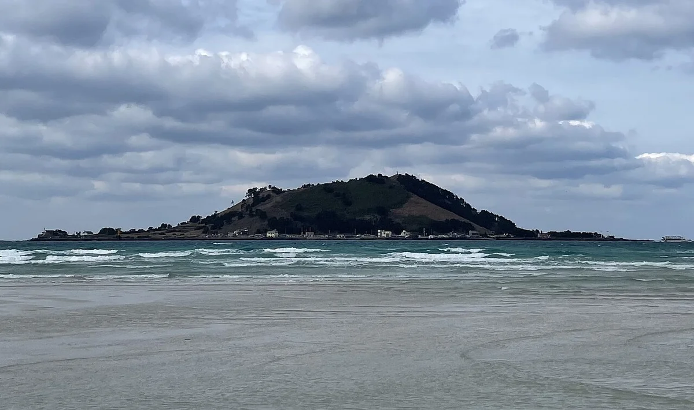
▲ 겨울 협재 해변에서 본 비양도(2022년 1월 30일 촬영). 흐린 하늘과 젖은 백사장이 여름 사진과 전혀 다르다 사진=베르니사주 · CC BY 4.0 · Wikimedia Commons
협재해수욕장은 조개껍질 가루가 많이 섞인 백사장과 앞바다에 떠 있는 비양도, 송림이 어우러진 해변으로 소개된다. 수심이 얕고 경사가 완만하며, 남서쪽으로 금능해수욕장과 이어진다. 한림공원, 협재굴 등이 가까워 같은 동선에 묶기 쉽다.
겨울에 갈 때 알아둘 점이 있다. 비짓제주는 협재의 2026년 해수욕장 개장·안전관리 운영 기간을 6월 24일~9월 6일로, 금능은 같은 기간(야간 개장 없음)으로 안내한다. 12월에는 이 기간이 아니므로 바다에 들어가기보다 산책·사진 위주로 계획하는 편이 맞다. 협재 문의 번호(064-728-3981)도 개장 기간에만 운영되는 종합상황실이라 겨울에는 연결되지 않을 수 있다.
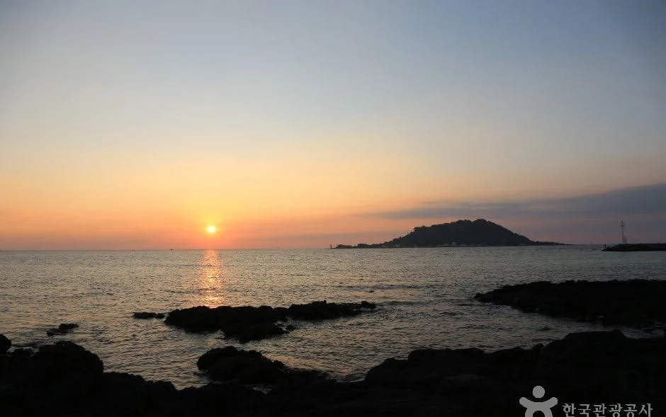
▲ 비양도 쪽 바다로 지는 해(한국관광공사 제공 협재해수욕장 일몰 사진, 촬영 시기 미표기) 사진=한국관광공사 · 공공누리 제1유형
금능해수욕장은 협재보다 덜 붐비는 편이라고 소개되며 주차장과 해변이 바로 연결돼 있다. 간조 때 모래사장이 넓게 드러난다는 안내가 있어 물때를 확인하고 가면 좋다. 조개껍질이 섞여 있어 물가에 들어갈 땐 신발을 신으라는 안내도 있다(비짓제주 소개문 인용). 반려동물은 입장할 수 있지만 목줄·가슴줄을 2m 이내로 유지하고 배변봉투를 챙겨야 하며 입수는 불가라고 안내돼 있다.
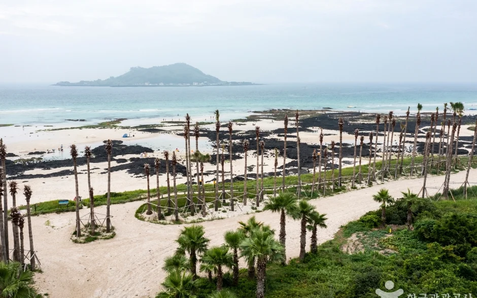
▲ 금능해변 산책로 일대(여름 촬영) 사진=한국관광공사 · 공공누리 제1유형
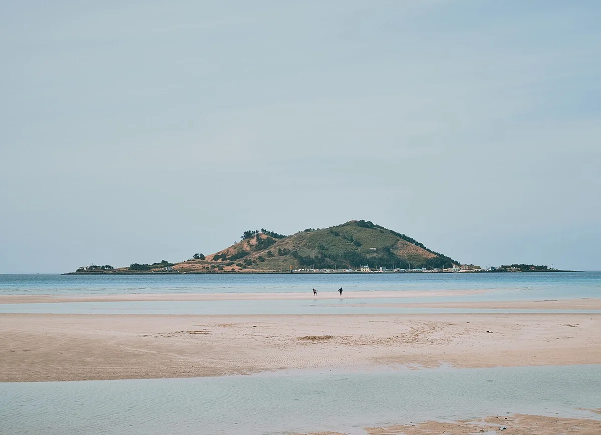
▲ 금능해변 쪽에서 바라본 비양도. 썰물 때 모래사장이 넓게 드러난다(제주올레재단 제공, 촬영일 2021년 1월 29일 표기) 사진=제주올레재단 · CC BY-SA 4.0 · Wikimedia Commons
| 날짜 | 협재·비양도 일대 | 섭지코지 일대 | ||
|---|---|---|---|---|
| 일출 | 일몰 | 일출 | 일몰 | |
| 12월 1일 | 07:20 | 17:27 | 07:17 | 17:24 |
| 12월 15일 | 07:31 | 17:28 | 07:28 | 17:25 |
| 12월 21일 | 07:34 | 17:30 | 07:32 | 17:28 |
| 12월 31일 | 07:38 | 17:36 | 07:35 | 17:34 |
| 1월 1일 | 07:38 | 17:37 | 07:36 | 17:34 |
| 1월 15일 | 07:39 | 17:49 | 07:36 | 17:46 |
| 1월 31일 | 07:32 | 18:04 | 07:29 | 18:01 |
한국천문연구원 누리집의 '일출·일몰 시각' 화면이 쓰는 계산 스크립트에 날짜와 좌표(비양도 북위 33.415°·동경 126.227°, 섭지코지 북위 33.424°·동경 126.930°)를 넣어 구한 값이다. 지도에서 읽은 좌표라 공식 조회 결과와 1분 안팎 차이가 날 수 있고, 지형 때문에 해가 가려지는 효과는 반영되지 않았다. 정확한 시각이 필요하면 누리집에서 지역을 직접 골라 조회하자. 한국천문연구원 일출·일몰 바로가기
일몰이 12월 1일 17시 27분에서 12월 21일 17시 30분까지 3분밖에 안 늦어지는 점이 눈에 띈다. 일몰 30분 전에는 해변에 도착해 있는 계획이 무난하다. 협재와 섭지코지는 동서로 직선 약 65km 떨어져 있어 같은 날 일몰이 3분가량 차이 난다.
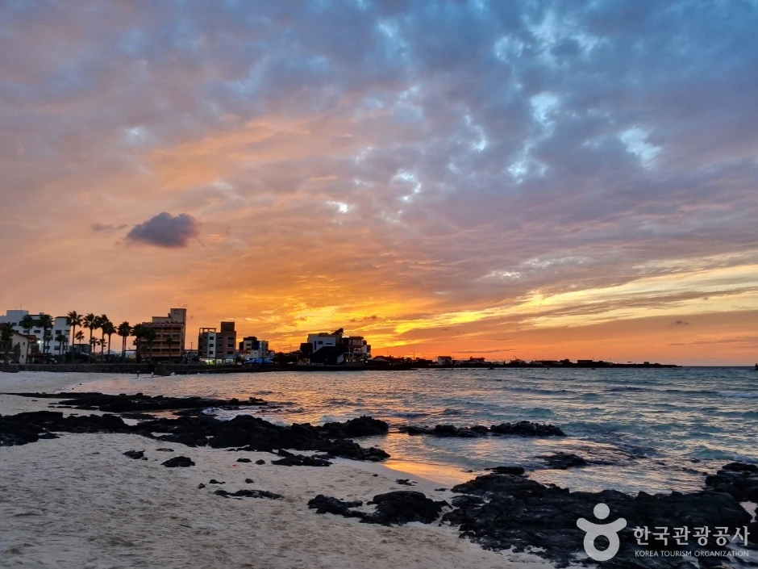
▲ 금능해수욕장 일몰(한국관광공사 제공, 촬영 시기 미표기) 사진=한국관광공사 · 공공누리 제3유형(변경금지)
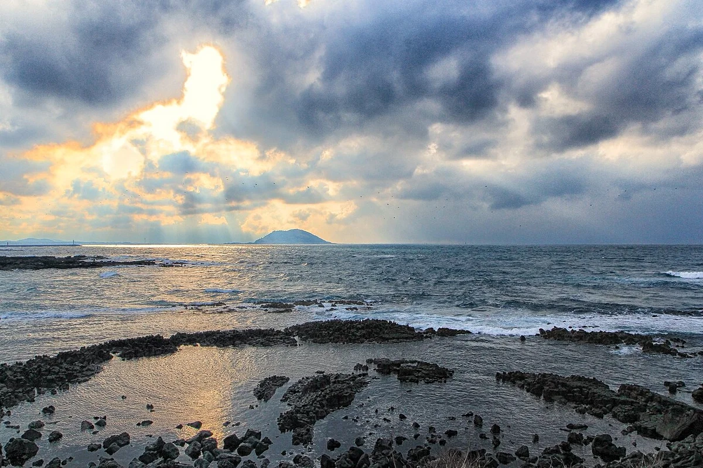
▲ 구름 사이로 빛이 내리는 겨울 오후의 제주 서쪽 해안, 비양도가 멀리 보인다(2012년 12월 24일 15시 30분경 촬영) 사진=우승민(SEUNGMIN WOO) · CC BY-SA 3.0 · Wikimedia Commons
3. 비양도 배편 — 시간표와 요금, 마지막 배 이후 1시간 42분
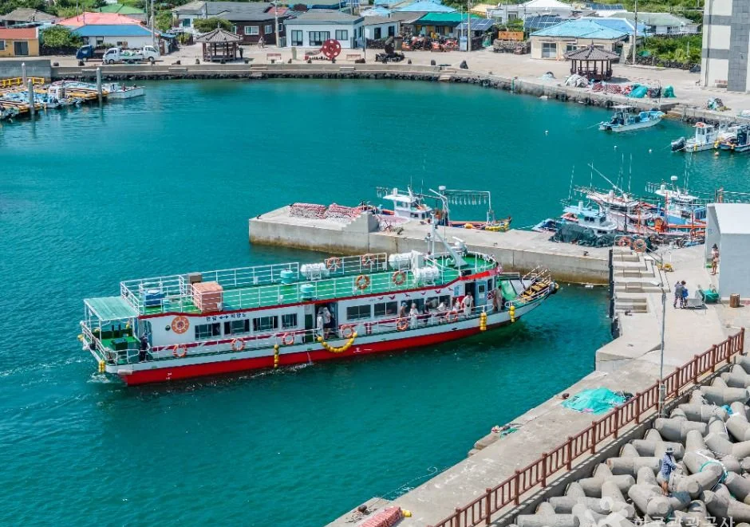
▲ 한림항을 오가는 비양도 도항선 사진=한국관광공사 · 공공누리 제1유형
비양도는 한림항에서 배로 15분 정도 걸린다. 관광공사 소개문은 하루 4번 정도 들어오고 나가는 배편이 있다고 하면서, 시간표와 기상에 따른 스케줄이 다를 수 있으니 방문 전 유선 확인을 권한다. 아래는 관광공사 관광정보(비양도선착장)에 등록된 시간표이며, 시간표 하단에도 "자세한 사항은 전화 문의 요망"이라고 적혀 있다.
| 선박 | 한림항 출발 | 비양도 출발 | 문의 |
|---|---|---|---|
| 비양도호 | 09:20 / 11:20 / 13:20 / 15:20 | 09:35 / 11:35 / 13:35 / 15:35 | 064-796-3515 |
| 2천년호 | 09:00 / 12:00 / 14:00 / 15:30 | 09:15 / 12:15 / 14:15 / 15:45 | 064-796-7522 |
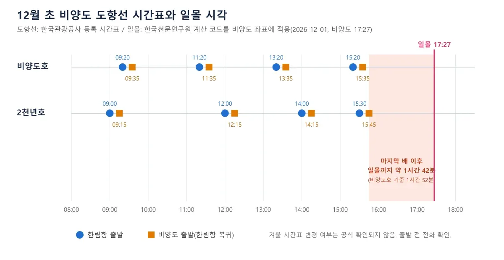
▲ 도항선 시간표와 12월 1일 일몰 시각 비교(본지 제작, 시간표는 한국관광공사 등록 정보)
요금도 같은 관광공사 정보에 올라 있다. 일반 왕복은 대인 12,000원·소인 6,000원이고, 제주도민 왕복은 대인 10,000원·소인(만 2~11세) 5,000원이다. 장애인복지카드와 국가유공자는 50% 할인이라고 적혀 있다.
| 구분 | 대인 | 소인 |
|---|---|---|
| 일반(관광객) 왕복 | 12,000원 | 6,000원 |
| 제주도민 왕복 | 10,000원 | 5,000원(만 2~11세) |
| 할인 | 장애인복지카드·국가유공자 50% 할인 | |
예매 방식과 겨울 결항 기준, 승선 때 필요한 서류는 공식 자료에서 확인하지 못했다. 비짓제주도 "기상에 따라 배편 운행이 없을 수 있다"고만 안내하므로, 비양리사무소(064-796-2730)와 한림항 도선대합실(064-796-7522), 각 선사에 출발 당일 전화하는 방법이 가장 확실하다.
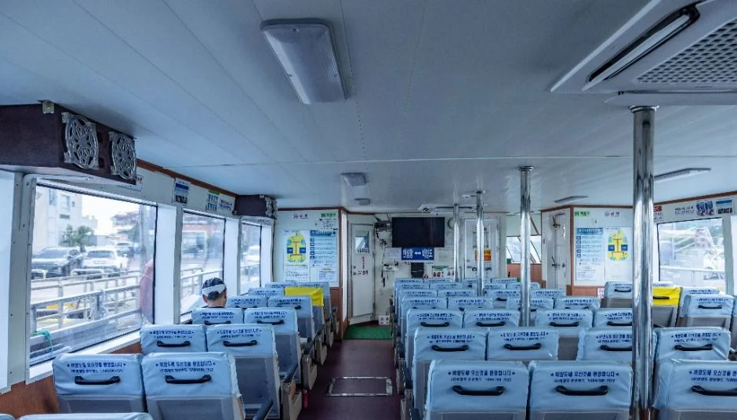
▲ 한국관광공사가 비양도 관광정보에 올린 도항선 객실 내부(촬영 시기 미표기) 사진=한국관광공사 · 공공누리 제1유형
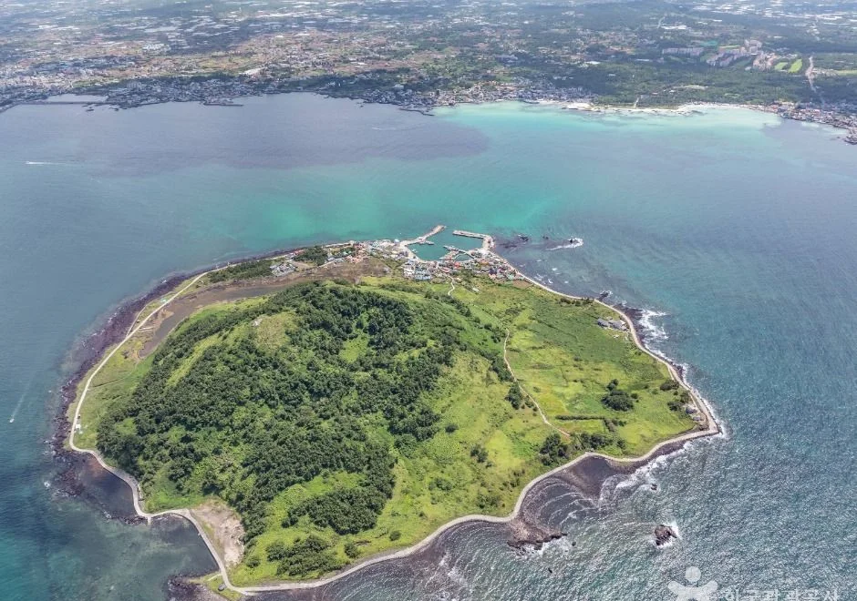
▲ 비양도 전경(여름 촬영) 사진=한국관광공사 · 공공누리 제1유형
비양도는 면적 0.5㎢의 작은 섬으로 2~3시간이면 돌아볼 수 있다고 소개된다. 비양봉 전망대와 하얀 등대, 애기업은돌, 코끼리 바위, 염습지 필랑못이 대표 명소이고, 섬을 한 바퀴 도는 일주 코스는 약 1.3km로 안내된다(비짓제주). 그런데 시간표를 보면 12월 초 일몰(17:27)보다 마지막 비양도 출발 배(15:35·15:45)가 1시간 42분~1시간 52분 이르다. 즉 비양도에서 일몰을 보는 일정은 불가능하다. 낮 배로 들어가 둘레길을 걷고 오후 배로 나온 뒤 협재 해변에서 일몰을 보는 순서가 맞다.
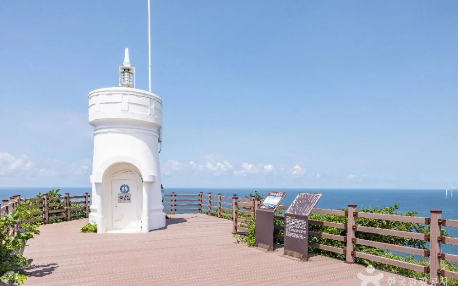
▲ 비양봉 전망대의 하얀 등대(여름 촬영) 사진=한국관광공사 · 공공누리 제1유형
| 한림항 출발 | 복귀 배 | 섬 체류 시간 | 비고 |
|---|---|---|---|
| 비양도호 09:20 | 비양도호 13:35 | 약 4시간 | 여유 있는 일주·비양봉 |
| 비양도호 11:20 | 비양도호 15:35 | 약 4시간 | 점심 후 협재 일몰까지 시간 확보 |
| 2천년호 12:00 | 2천년호 15:45 | 약 3시간 30분 | 오후 일정에 적합 |
| 비양도호 13:20 | 비양도호 15:35 | 약 2시간 | 소개문의 최소 소요 시간(2~3시간)에 빠듯 |
| 2천년호 14:00 | 2천년호 15:45 | 약 1시간 30분 | 소요 시간에 못 미침 |
도착 시각은 편도 약 15분 소요라는 안내를 근거로 계산했다. 왕복에 같은 선박을 타야 하는지는 공식 자료에서 확인하지 못했으니 매표소에서 문의하자.
4. 동쪽 섭지코지 — 붉은오름 등대와 해안 산책로
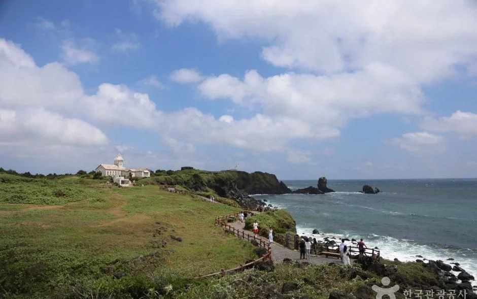
▲ 섭지코지 해안 산책로(여름 촬영) 사진=한국관광공사 · 공공누리 제1유형
섭지코지는 서귀포시 성산읍 신양리 해안에 코처럼 튀어나온 지형이다. 관광공사 소개문에 따르면 코지 언덕 위에는 높이 약 4m, 가로세로 9m의 봉수대 협자연대가 비교적 원형대로 남아 있고, 붉은오름 정상의 하얀 등대까지는 철계단이 있어 쉽게 오를 수 있다.
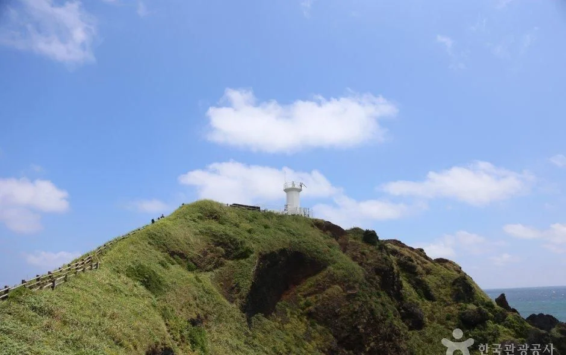
▲ 붉은오름과 등대(여름 촬영) 사진=한국관광공사 · 공공누리 제1유형
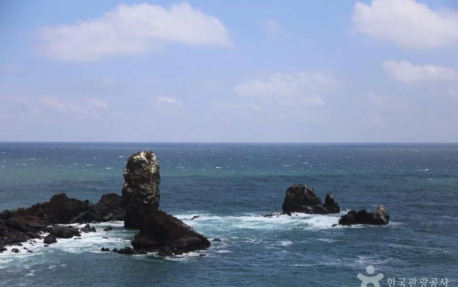
▲ 섭지코지 해안의 선돌 일대(여름 촬영) 사진=한국관광공사 · 공공누리 제1유형
찾아가는 길은 신양리 해안 국도에서 마을로 들어가 이정표를 따라 포장도로를 가면 코지 끝까지 닿는다. 서귀포 방면에서는 표선 시내를 지나 약 7km 뒤 우측 해안도로 표지판에서 우회전하라고 안내돼 있다.
주차 요금은 비짓제주에 올라 있다. 섭지코지주차장은 일반 소형 기준 최초 30분 1,000원, 이후 15분마다 500원, 1일 최대 3,000원이고, 휘닉스 아일랜드 주차장은 일반 소형 기준 1일 5,000원이다. 입장료는 한국관광공사 등록 정보에 무료로 표기돼 있다.
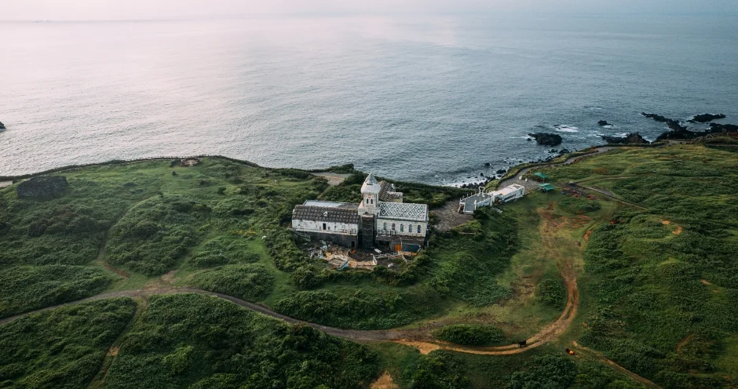
▲ 섭지코지 해안 언덕과 건물(여름 촬영) 사진=한국관광공사 · 공공누리 제1유형
건축물 — 글라스하우스와 유민 아르누보 뮤지엄
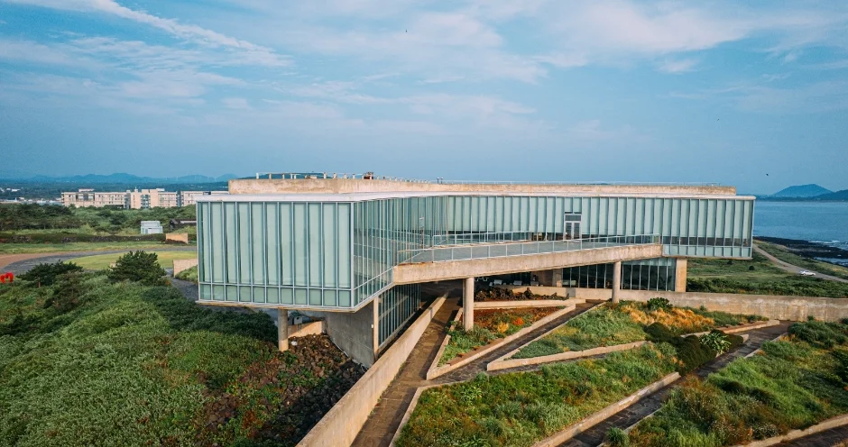
▲ 한국관광공사가 "휘닉스 제주 글라스하우스 & 유민 아르누보 뮤지엄"으로 등록한 사진(여름 촬영) 사진=한국관광공사 · 공공누리 제1유형
글라스하우스는 안도 다다오 설계로 소개되는 건축물로, 플로이스트 베이커리 카페와 소품숍으로 이뤄졌다. 관광공사 정보는 이용 시간 10:00~18:00, 연중무휴, 입장료 무료, 주차 "불가능"으로 표기하고 있다. 유민미술관 전시 관람료는 공식 확인하지 못했으며 휘닉스 제주(064-731-7773) 문의가 필요하다.
겨울에는 일몰(12월 섭지코지 일대 17:24~17:34)이 마감 시각(18:00)보다 이르니, 노을 시간대 방문을 노린다면 해가 지고 난 뒤에도 문이 열려 있는 시간을 계산해 두자. 자체 주차가 불가능으로 등록돼 있으므로 어느 주차장을 쓰는지도 방문 전에 문의하면 좋다.
섭지코지 일출과 성산일출봉 연계
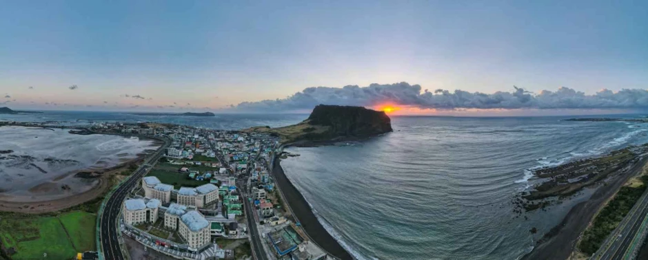
▲ 성산일출봉 일대의 일출 파노라마(한국관광공사 제공, 촬영 시기 미표기) 사진=한국관광공사 · 공공누리 제3유형(변경금지)
동쪽 코스는 일출이 중심이다. 계산값으로 12월 1일 섭지코지 일출은 07:17, 1월 1일은 07:36이다. 섭지코지에서 성산일출봉까지는 자동차로 약 6km, 10분 안팎으로 추정된다(공개 경로 계산).
| 항목 | 내용 |
|---|---|
| 11월~2월 운영 | 06:00~18:00, 매표 마감 17:00 |
| 휴무 | 매월 첫째 주 월요일(공휴일이면 다음날) |
| 입장료(개인) | 어른 5,000원, 청소년·군인·어린이 2,500원 |
| 도민·국가유공자·장애인 | 증명서류 지참 시 입장료 면제 |
| 주차 | 가능, 요금 무료로 표기 |
| 문의 | 064-783-0959 |
매표 마감이 17시라 일몰 무렵에는 오를 수 없다는 점에 유의하자. 겨울 동쪽 코스는 이른 아침 일출봉이나 섭지코지에서 해를 보고, 낮에 두 곳을 걷는 순서가 시간상 무리가 적다.
5. 숙소별 선택 기준과 자차 이동 — 하루에 두 곳은 무리
공식 주소로 보면 협재(한림읍)와 섭지코지(성산읍)는 제주 서쪽 끝과 동쪽 끝에 가깝다. 아래 이동 시간은 공개 경로 계산(OSRM)으로 구한 추정값이라 실제 교통·도로 상황·눈길을 반영하지 않는다. 지도 앱으로 당일 도로 상황을 보며 정하자.
| 구간 | 거리 | 시간 |
|---|---|---|
| 제주국제공항 → 한림항 일대 | 약 27km | 약 32분 |
| 협재 → 섭지코지 | 약 76km | 약 1시간 27분 |
| 제주국제공항 → 섭지코지 | 약 48km | 약 58분 |
| 섭지코지 → 성산일출봉 | 약 6km | 약 10분 |
협재에서 일몰을 보고 섭지코지로 가는 일정은 해진 뒤 약 1시간 반을 해안·중산간 도로에서 운전해야 해 겨울에는 권하기 어렵다. 반대로 섭지코지 일출(07:17)을 본 뒤 협재 일몰(17:27)까지 가는 것은 시간상 가능하지만, 비양도 배(마지막 15:35·15:45)까지 넣으면 빠듯하다. 한 날은 서쪽, 다른 날은 동쪽으로 나누는 편이 낫다.
| 숙소 위치 | 추천 | 이유 |
|---|---|---|
| 제주시·공항 근처 | 협재·금능·비양도 | 공항에서 한림항까지 약 32분(추정), 낮 배 이용 가능 |
| 애월·한림·한경 | 협재·금능·비양도 | 한림항·협재가 인접 |
| 성산·표선·서귀포 동부 | 섭지코지·성산일출봉 | 같은 동쪽 해안 |
| 중문·서귀포 시내 | 당일 일정·일몰 시각에 따라 선택 | 양쪽 모두 1시간 안팎 거리로 추정되나 이동 시간 확인 필요 |
해수욕장에 텐트를 장기간 쳐 두는 이른바 '알박기'를 둘러싼 규제와 차박 가능 장소는 제주 차박 명소 5곳 기사에 정리돼 있으니 차박을 생각한다면 먼저 보자. 렌터카를 쓸지 내 차를 쓸지는 제주 렌터카 vs 자차 비용 기사에 비교했다.
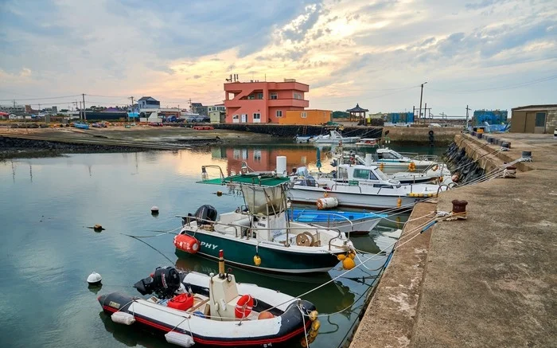
▲ 금능포구의 노을 무렵 풍경(한국관광공사 제공, 촬영 시기 미표기) 사진=한국관광공사 · 공공누리 제1유형
6. 겨울 바람·복장 — 수치는 확인 못 한 부분
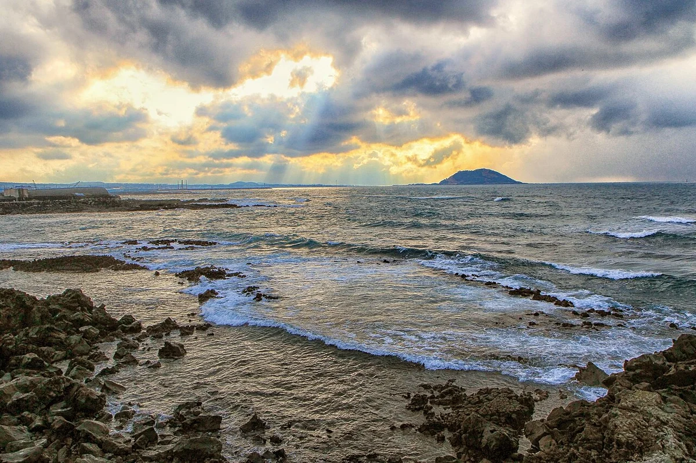
▲ 파도와 구름이 거친 겨울 오후의 제주 해안(2012년 12월 24일 촬영) 사진=우승민(SEUNGMIN WOO) · CC BY-SA 3.0 · Wikimedia Commons
제주 해안은 겨울에 바람이 강하다는 점이 일반적으로 알려져 있지만, 협재·섭지코지 지점의 기온·풍속 공식 수치는 확인하지 못했다. 아래는 일반적인 준비 권장이며 기상청 예보를 우선하자.
| 항목 | 권장 |
|---|---|
| 복장 | 방풍 겉옷, 목도리·장갑, 미끄럽지 않은 신발 |
| 시간 | 일몰 전 해변 도착, 일몰 후 해안도로 야간 주행 유의 |
| 배편 | 당일 아침 전화로 운항 여부 확인 |
| 해변 | 협재·금능은 개장 기간(6월 24일~9월 6일) 밖이라 입수 비권장 |
| 섭지코지 | 붉은오름 철계단은 비·강풍 시 주의 |
제주 연계 일정은 비자림·사려니숲 겨울 가이드도 참고하자. 오름 코스는 제주 오름 억새 가이드에 정리했다.
✅ 협재·섭지코지 가기 전 체크리스트
· 비양도: 마지막 배 비양도호 15:35·2천년호 15:45, 일몰(12월 초 17:27) 이후 승선 불가
· 비양도 배 왕복 일반 대인 12,000원·소인 6,000원(관광공사 등록 정보), 겨울 변동·결항은 전화 확인
· 협재·섭지코지: 상시 개방, 입장료 무료 표기 / 섭지코지주차장 1일 최대 3,000원
· 글라스하우스: 10:00~18:00, 주차 불가능 표기 / 성산일출봉: 11~2월 06:00~18:00, 매표 마감 17:00
· 12월 일몰 협재 17:27~17:30, 섭지코지 17:24~17:28(계산값), 1월 31일 각각 18:04·18:01
· 출발 당일 한림항 도선대합실 064-796-7522 확인
7. 정리
2026년 10월 17일 기준, 12월 1일 일몰은 17시 27분인데 비양도 마지막 배는 15시 35분(비양도호)·15시 45분(2천년호)이다. 서쪽 코스는 낮 배로 비양도를 보고 오후에 협재에서 일몰을 맞이하는 순서가 맞고, 숙소가 동쪽이면 섭지코지와 성산일출봉이 낫다. 협재에서 섭지코지까지는 자동차로 약 1시간 반(추정)이라 하루에 묶기보다 나누는 편이 안전하다.
겨울철 배 시간표 변경과 결항 기준, 협재 주차 요금, 유민미술관 관람료, 배 예매 방식은 공식 확인하지 못했다. 출발 전 각 문의처에 전화로 확인하자.